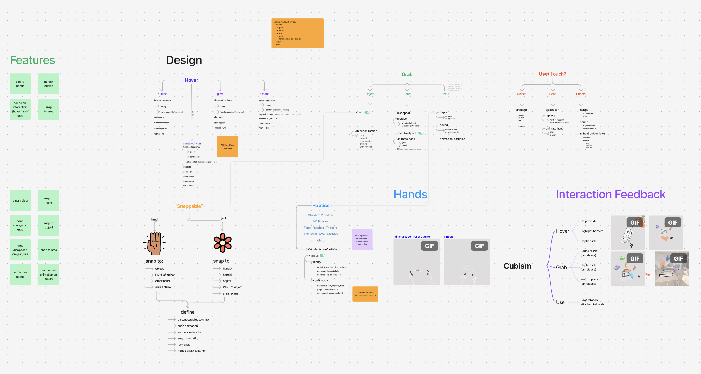
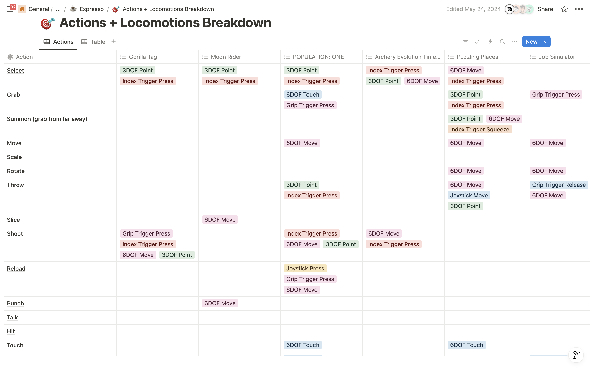
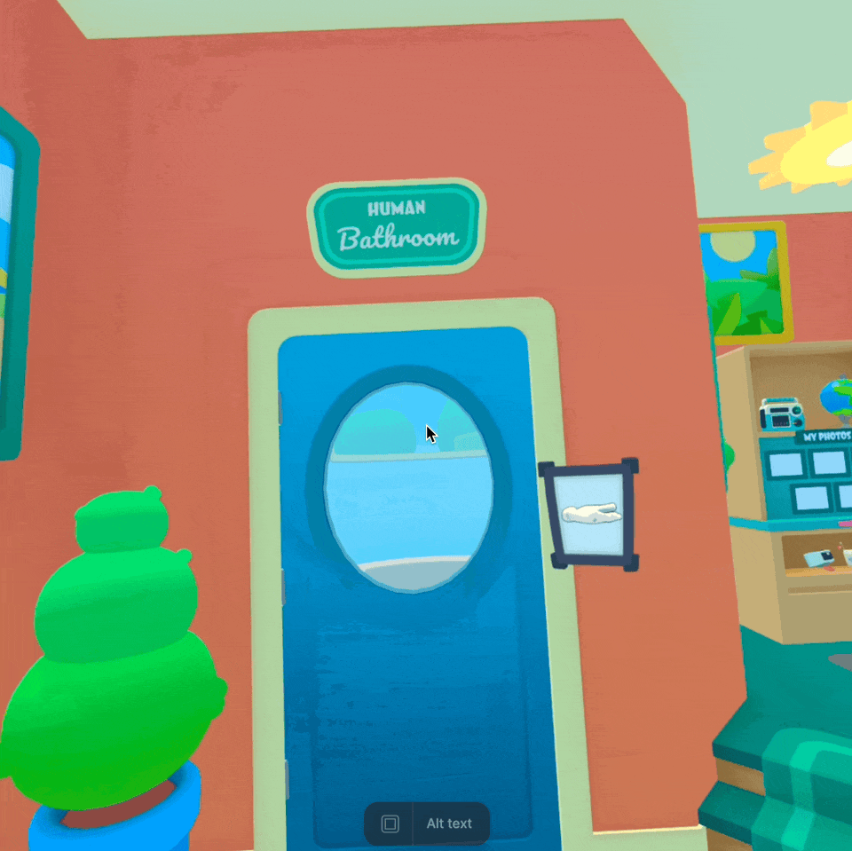
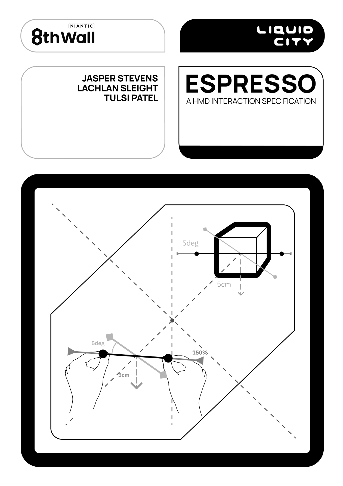

VR Interaction Design Research
Tools: FigJam, Notion, Meta Quest
At Liquid City, I took on an intriguing research project examining interaction mechanics for mixed reality headsets. Our client, Niantic, needed insights for building a platform that would allow non-experts to create their own VR games, which meant I needed to deeply understand what makes VR interactions intuitive and successful.

I began by building an extensive library of Meta Quest and web-based VR games, documenting everything from device requirements and controller types to development approaches and user ratings. This foundation helped me develop a systematic testing framework.
When playing shooter games, for instance, I'd analyze the core interaction patterns: Do players use trigger buttons or 'X' buttons? Are there hand-tracking alternatives? What specific finger positions trigger different actions?

The research extended to locomotion and physics mechanics as well. I investigated questions like: Does the game use free movement or teleportation? How does view rotation work - through natural head movement (6DOF) or joystick control? More importantly, which approaches felt more natural and why?

World Manipulation

Teleportation Locomotion

Snap Turn Rotation
As patterns emerged through detailed documentation, I synthesized my findings into a comprehensive 150-page guide. This document gave the development team clear direction on building their platform - achieving the right balance between modularity and user-friendliness.
Through this process, I had to remain cognizant of the client's core challenge: how to make VR game development accessible to non-experts while maintaining the quality of interaction that makes VR experiences compelling. The research directly informed Niantic's platform design decisions and interaction guidelines.

Research Deliverable
150-page comprehensive guide
• Interaction pattern analysis
• Platform design recommendations
• User-friendly development guidelines